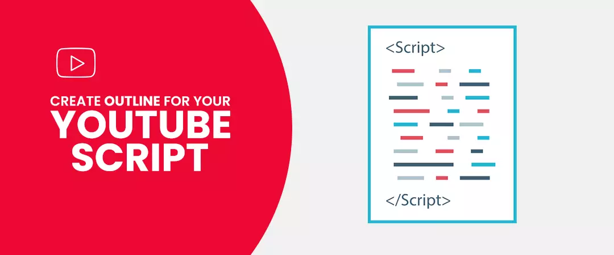
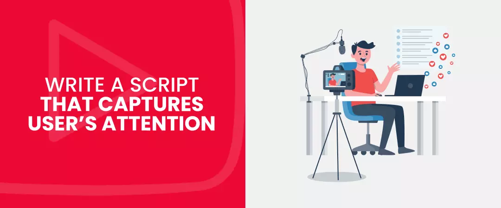
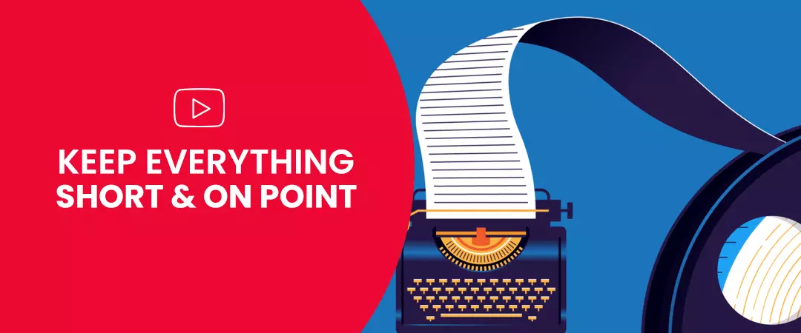
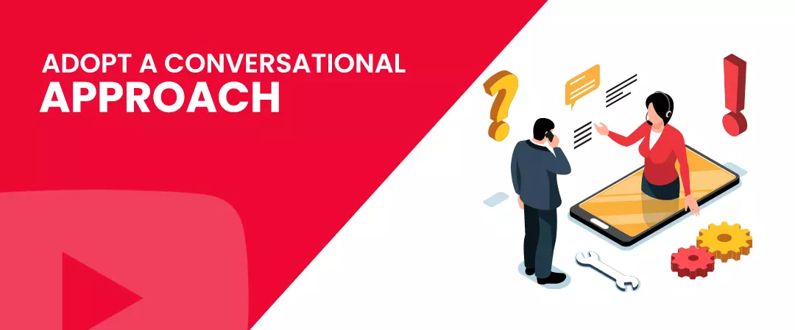
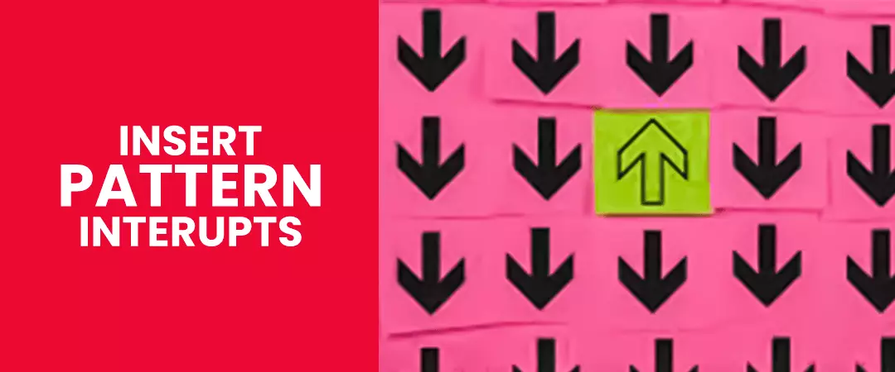

Many of you may brush off video script writing as something optional and one that do not require much of your time or effort. We say otherwise; think about how your video will turn out, if the foundation itself is weak.
You can go ahead and wing it without a YouTube script, but if you're not aware of your audience's pain points or how to deliver your solution to their problems, then your video will have the expected impact - scoring no trust points from your viewers
7 in 10 viewers have found a solution to a problem on YouTube - it could be something related to their job, hobbies, or learning.
We have loaded this article with essential points that are crucial for a compelling script. Stay with us, and we will show you how you can write a script that will grab and hold your viewers’ attention.
Contents
- 1. How to Write a Script for YouTube
- 2. By Start looking for topics
- 3. Spy on your competitors
- 4. Confirm your topic
- 5. Create an outline for your YouTube script
- 6. Write a YouTube video script that captures users’ attention
- 7. Highlight problem and reveal solution
- 8. Keep everything short and on point
- 9. Adopt a conversational approach
- 10. Insert pattern interrupts
How to Write a Script for YouTube
For your video marketing strategy, YouTube SEO takes priority over a solid script. Your title, thumbnail design, and description will determine the click-through rate on your videos.
But when people click and come to your video, you need to capture their attention and hold it through the content duration - this is where YouTube video script writing plays a vital role.
Engagement is crucial to improve a video's ranking. Your title, thumbnail, and description will drive traffic to your content, but the same does not contribute much to keeping users engaged - that is where the script comes into play.
You can also follow in the footsteps of other YouTubers and buy YouTube subscribers as part of your strategy to bring in more traffic to your channel.
1. By Start looking for topics
Your topic should address your audience's pain points and focus on solutions to their problems.
It will help if you put yourself in the shoes of your viewers. Look at things from their perspective - what problems they face, the intention behind their search queries, and how you can help.
In contrast to finding topics for YouTube SEO, video script writing does not emphasize target keywords. You write a script intending to include relevant information helpful to your audience.
2. Spy on your competitors
Once you discover a substantial number of topics after utilizing every brain cell, it's always a good idea to look at your competitors to unearth any ideas or concepts that could have slipped your mind. You can also discover new topics which you didn't know existed. When you find something interesting, include it in your script.
Make sure you focus on your rivals only after you have exhausted all available resources at your disposal, looking for ideas.
3. Confirm your topic
With many ideas at hand, you need to narrow the list down to fewer but specific ones.
Adopt the approach below to gauge the level of interest in your viewers and find more sub-topics that can be a part of your script.
-
Use Google trends
A tool used to determine the performance of a term or phrase in different search engines. You only have to enter a keyword and toggle between Google or YouTube in the dropdown menu.
Below you witness a graph representing the search trend for the keyword for the past year.
Interest levels are estimated as follows:
- A score under 50 means less interest for the keyword.
- A score between 50 and 100 shows a high preference for the search term.
- Anything between 50 and 100 shows high interest for the keyword among users.
-
Use YouTube auto-suggestion feature
YouTube receives 30 million logins every day . It is safe to say that millions of users perform searches on the platform. YT algorithm is one of the most sophisticated programs that give the best results for users' queries. YouTube autosuggest will only recommend search terms used by network users when they search for content.
You can capitalize on recommendations and include the queries as part of your YouTube script.
Pro Tip: Use an asterisk when you type in your search term - It is a good practice to identify different variations of the primary keyword
-
Find out the search volume for your keywords
There are many free and paid tools available online that you can use to find the search volume for your newly discovered topics and YouTube keywords. Tools like Ahrefs and SEMrush are world-renowned to give the most accurate numbers. While many ideas on hand can be good, using them in your script can be overwhelming to your audience. At the same time, less usage can be underwhelming.
4. Create an outline for your YouTube script

Upon selecting a topic to include in your script - creating an outline is the next crucial step in video script writing. Do not adopt an attitude of going in headfirst without a plan in place. The outline is your guide that breaks your video into subsections, giving you a bird's eye view on how you deliver your speech - resulting in a much more refined output. We recommend creating specific outlines for the intro, body, and conclusion of your video.
5. Write a YouTube video script that captures users’ attention

YouTube is a highly competitive platform where multiple creators strive to attract new eyes towards their content. Hence, it would help if you gave your audience a reason to keep watching your video.
YouTube also has something called the 15-second rule that stresses the importance of grabbing your audience's attention immediately. People want to gain maximum value from the time they invest in watching a video; if your video doesn't cut, they will migrate towards another content.
Commanding user's attention is an art seldom known to many.
The first few seconds are crucial; it can either break or make your video:
- Use the sentences at the start of the script.
- Introducing the narrator and the topic that is covered in the video.
- Posting a question that is directed at your viewers' pain points – immediately promising a solution.
6. Highlight problem and reveal solution
Great, now that you have your audience's undivided attention, it's time to address the underlying problem to establish emotional connectivity.
First, highlight the problem and give it a context - this will emphasize the severity of the issue and repercussions if an immediate resolution is not achieved. Next, follow up with a solution; this shows that the information you provided is legit and will yield favorable results - further strengthening your relationship with your viewers.
Keep in mind that the solution you provide is straightforward and easy to grasp by the audience without much difficulty—back up your claim with credible statistics, findings, and examples.
7. Keep everything short and on point

People usually tend to favor shorter videos more than the longer ones. Short videos mean you have to keep your script short. Do not stretch your script longer than it needs to be; if you can wrap everything up within a single page, then do it. Keep two pages as your self-imposed limit. We suggest editing your YouTube script numerous times until you are satisfied with the product - this will remove all unnecessary baggage from your script.
8. Adopt a conversational approach

At first, it may feel like you are speaking to a larger audience, but you are engaged in a one-on-one interaction with a single person in reality. Hence, it would help if you wrote a YouTube video script that is individual-centric - this will make your content delivery even more personal and relatable to your audience.
If you cover topics that require an in-depth explanation of certain concepts, then think about how a single individual will be able to grasp the knowledge you impart. Your message should be directed towards a person and not a group. You will soon realize that it is much less intimidating when you address a single person and not a large crowd.
9. Insert pattern interrupts

Pattern interrupts are outstanding in capturing the fleeting attention of your viewers and are considered a significant part of any video marketing strategy. The term pattern interrupt came into existence when researchers undertook a study on neuro-linguistic programming - we as humans are prone to direct our attention towards unexpected changes happening in our surroundings.
You can introduce pattern interruptions in a video in different forms - you can abruptly transition between camera angles, use humour, including creative animations, or manipulate sounds. Highlight points of pattern interrupt when you create your script.
We hope you found our article on YouTube video script writing helpful, do check out more content on our website.
Feel free to share.